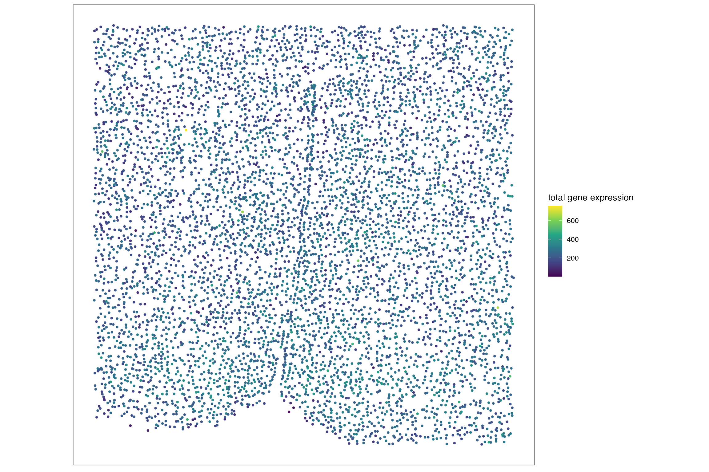
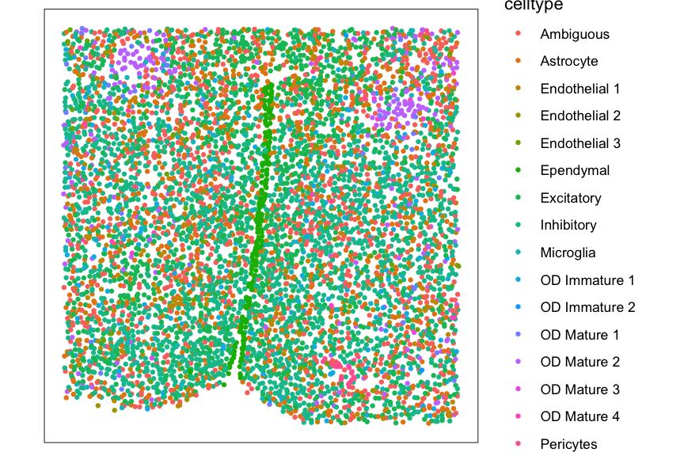

Formatting a SpatialExperiment Object for SEraster
Source:vignettes/formatting-SpatialExperiment-for-SEraster.Rmd
formatting-SpatialExperiment-for-SEraster.RmdFormatting a SpatialExperiment Object for SEraster
For this tutorial, we will format a preprocessed MERFISH dataset of
the mouse preotic area (POA) into a SpatialExperiment so
that it can be rasterized with SEraster. The output of this
tutorial is the same as the merfish_mousePOA dataset in the
package.
In the original work, Moffitt J. and Bambah-Mukku D. et al. (2018), “Molecular, spatial, and functional single-cell profiling of the hypothalamic preoptic region”, Science Advances, authors collected spatial transcriptomics datasets of mouse POA regions for various sexes, behavioral conditions, and bregma sections. The full dataset can be downloaded from Dryad. We only use the dataset for a bregma -0.29 slice from a female naive animal (Animal ID = 1).
Load libraries
library(SpatialExperiment)
#> Loading required package: SingleCellExperiment
#> Loading required package: SummarizedExperiment
#> Loading required package: MatrixGenerics
#> Loading required package: matrixStats
#> Warning: package 'matrixStats' was built under R version 4.3.2
#>
#> Attaching package: 'MatrixGenerics'
#> The following objects are masked from 'package:matrixStats':
#>
#> colAlls, colAnyNAs, colAnys, colAvgsPerRowSet, colCollapse,
#> colCounts, colCummaxs, colCummins, colCumprods, colCumsums,
#> colDiffs, colIQRDiffs, colIQRs, colLogSumExps, colMadDiffs,
#> colMads, colMaxs, colMeans2, colMedians, colMins, colOrderStats,
#> colProds, colQuantiles, colRanges, colRanks, colSdDiffs, colSds,
#> colSums2, colTabulates, colVarDiffs, colVars, colWeightedMads,
#> colWeightedMeans, colWeightedMedians, colWeightedSds,
#> colWeightedVars, rowAlls, rowAnyNAs, rowAnys, rowAvgsPerColSet,
#> rowCollapse, rowCounts, rowCummaxs, rowCummins, rowCumprods,
#> rowCumsums, rowDiffs, rowIQRDiffs, rowIQRs, rowLogSumExps,
#> rowMadDiffs, rowMads, rowMaxs, rowMeans2, rowMedians, rowMins,
#> rowOrderStats, rowProds, rowQuantiles, rowRanges, rowRanks,
#> rowSdDiffs, rowSds, rowSums2, rowTabulates, rowVarDiffs, rowVars,
#> rowWeightedMads, rowWeightedMeans, rowWeightedMedians,
#> rowWeightedSds, rowWeightedVars
#> Loading required package: GenomicRanges
#> Loading required package: stats4
#> Loading required package: BiocGenerics
#>
#> Attaching package: 'BiocGenerics'
#> The following objects are masked from 'package:stats':
#>
#> IQR, mad, sd, var, xtabs
#> The following objects are masked from 'package:base':
#>
#> anyDuplicated, aperm, append, as.data.frame, basename, cbind,
#> colnames, dirname, do.call, duplicated, eval, evalq, Filter, Find,
#> get, grep, grepl, intersect, is.unsorted, lapply, Map, mapply,
#> match, mget, order, paste, pmax, pmax.int, pmin, pmin.int,
#> Position, rank, rbind, Reduce, rownames, sapply, setdiff, sort,
#> table, tapply, union, unique, unsplit, which.max, which.min
#> Loading required package: S4Vectors
#>
#> Attaching package: 'S4Vectors'
#> The following object is masked from 'package:utils':
#>
#> findMatches
#> The following objects are masked from 'package:base':
#>
#> expand.grid, I, unname
#> Loading required package: IRanges
#> Loading required package: GenomeInfoDb
#> Loading required package: Biobase
#> Welcome to Bioconductor
#>
#> Vignettes contain introductory material; view with
#> 'browseVignettes()'. To cite Bioconductor, see
#> 'citation("Biobase")', and for packages 'citation("pkgname")'.
#>
#> Attaching package: 'Biobase'
#> The following object is masked from 'package:MatrixGenerics':
#>
#> rowMedians
#> The following objects are masked from 'package:matrixStats':
#>
#> anyMissing, rowMedians
library(Matrix)
#>
#> Attaching package: 'Matrix'
#> The following object is masked from 'package:S4Vectors':
#>
#> expand
library(ggplot2)
#> Warning: package 'ggplot2' was built under R version 4.3.2
library(gridExtra)
#>
#> Attaching package: 'gridExtra'
#> The following object is masked from 'package:Biobase':
#>
#> combine
#> The following object is masked from 'package:BiocGenerics':
#>
#> combineLoad dataset
data <- read.csv('~/Downloads/Moffitt_and_Bambah-Mukku_et_al_merfish_all_cells.csv')Subset the dataset to specific female, behavioral condition, and bregma section.
animal <- 1
sex <- "Female"
behavior <- "Naive"
bregma <- "-0.29"
data_sub <- data[(data$Animal_ID == animal & data$Animal_sex == sex & data$Behavior == behavior & data$Bregma == bregma),]
dim(data_sub)
#> [1] 6509 170Process dataset
The subsetted has cells. For rasterizing gene expression with
SEraster, the input SpatialExperiment needs to
have a genes-by-cells matrix (either dense or sparse matrix) in the
assay slot and a spatial coordinates matrix in the
spatialCoords slot. For rasterizing cell-type labels with
SEraster, in addition to the spatial coordinates matrix in
the spatialCoords splot, the input
SpatialExperiment also need to have a data frame with a
column for cell-type labels in the colData slot. Thus,
here, we extract genes-by-cells matrix, spatial coordinates matrix, and
data frame with cell-type labels.
## genes-by-cells matrix
# extract the genes-by-cells matrix as a sparse matrix (dgCMatrix)
mat <- as(t(data_sub[,10:ncol(data_sub)]), "CsparseMatrix")
# remove blank genes used for quality control
blanks <- rownames(mat)[grepl("Blank", rownames(mat))]
mat <- mat[setdiff(rownames(mat),blanks),]
## spatial coordinates matrix
# extract the spatial coordinates
pos <- data_sub[,c("Centroid_X", "Centroid_Y")]
colnames(pos) <- c("x","y")
# make x,y coordinates positive
pos[,1] <- pos[,1] - min(pos[,1])
pos[,2] <- pos[,2] - min(pos[,2])
## cell-type labels
# extract the data frame with cell-type labels
meta <- data_sub[,c("Bregma", "Cell_class", "Neuron_cluster_ID")]
colnames(meta) <- c("bregma", "celltype", "neurontype")
## standardize cell IDs for the extracted objects
colnames(mat) <- rownames(pos) <- rownames(meta) <- data_sub$Cell_IDRemove genes and cells with NaN values.
## filter genes with NaN values
bad_genes <- names(which(rowSums(is.nan(mat)) > 0))
mat <- mat[setdiff(rownames(mat),bad_genes),]
## filter cells with NaN values
bad_cells <- names(which(colSums(is.nan(mat)) > 0))
mat <- mat[,setdiff(colnames(mat),bad_cells)]
pos <- pos[setdiff(rownames(pos),bad_cells),]
meta <- meta[setdiff(rownames(pos),bad_cells),]Plot total gene expression at single-cell resolution for verification.
df_plt <- data.frame(pos, total_gexp = colSums(mat))
ggplot(df_plt, aes(x = x, y = y, color = total_gexp)) +
coord_fixed() +
geom_point(size = 1.5, stroke = 0) +
scale_color_viridis_c(name = "total gene expression") +
theme_bw() +
theme(panel.grid = element_blank(),
axis.title = element_blank(),
axis.text = element_blank(),
axis.ticks = element_blank())
Plot cell-type labels at single-cell resolution for verification.
df_plt <- data.frame(pos, celltype = meta$celltype)
ggplot(df_plt, aes(x = x, y = y, color = celltype)) +
coord_fixed() +
geom_point(size = 1.5, stroke = 0) +
theme_bw() +
theme(panel.grid = element_blank(),
axis.title = element_blank(),
axis.text = element_blank(),
axis.ticks = element_blank())
Format SpatialExperiment object
Format genes-by-cells matrix, spatial coordinates matrix, and data
frame with cell-type labels into a SpatialExperiment
object. Here, the genes-by-cells matrix is named as “volnorm” because
the loaded gene expression was already normalized by cell volume and
scaled by 1000.
spe <- SpatialExperiment::SpatialExperiment(
assays = list(volnorm = mat),
spatialCoords = as.matrix(pos),
colData = meta
)Session Info
sessionInfo()
#> R version 4.3.1 (2023-06-16)
#> Platform: x86_64-apple-darwin20 (64-bit)
#> Running under: macOS Monterey 12.1
#>
#> Matrix products: default
#> BLAS: /Library/Frameworks/R.framework/Versions/4.3-x86_64/Resources/lib/libRblas.0.dylib
#> LAPACK: /Library/Frameworks/R.framework/Versions/4.3-x86_64/Resources/lib/libRlapack.dylib; LAPACK version 3.11.0
#>
#> locale:
#> [1] en_US.UTF-8/en_US.UTF-8/en_US.UTF-8/C/en_US.UTF-8/en_US.UTF-8
#>
#> time zone: America/New_York
#> tzcode source: internal
#>
#> attached base packages:
#> [1] stats4 stats graphics grDevices utils datasets methods
#> [8] base
#>
#> other attached packages:
#> [1] gridExtra_2.3 ggplot2_3.5.1
#> [3] Matrix_1.6-5 SpatialExperiment_1.10.0
#> [5] SingleCellExperiment_1.22.0 SummarizedExperiment_1.30.2
#> [7] Biobase_2.60.0 GenomicRanges_1.52.1
#> [9] GenomeInfoDb_1.36.4 IRanges_2.34.1
#> [11] S4Vectors_0.38.2 BiocGenerics_0.46.0
#> [13] MatrixGenerics_1.12.3 matrixStats_1.3.0
#>
#> loaded via a namespace (and not attached):
#> [1] tidyselect_1.2.1 viridisLite_0.4.2
#> [3] dplyr_1.1.4 farver_2.1.2
#> [5] R.utils_2.12.3 bitops_1.0-7
#> [7] fastmap_1.1.1 RCurl_1.98-1.14
#> [9] digest_0.6.35 lifecycle_1.0.4
#> [11] magrittr_2.0.3 compiler_4.3.1
#> [13] rlang_1.1.3 sass_0.4.9
#> [15] tools_4.3.1 utf8_1.2.4
#> [17] yaml_2.3.8 knitr_1.45
#> [19] labeling_0.4.3 S4Arrays_1.0.6
#> [21] dqrng_0.3.2 htmlwidgets_1.6.4
#> [23] DelayedArray_0.26.7 abind_1.4-5
#> [25] BiocParallel_1.36.0 HDF5Array_1.28.1
#> [27] withr_3.0.0 purrr_1.0.2
#> [29] desc_1.4.3 R.oo_1.26.0
#> [31] grid_4.3.1 fansi_1.0.6
#> [33] beachmat_2.16.0 colorspace_2.1-0
#> [35] Rhdf5lib_1.22.1 edgeR_3.42.4
#> [37] scales_1.3.0 cli_3.6.2
#> [39] rmarkdown_2.26 crayon_1.5.2
#> [41] ragg_1.3.1 generics_0.1.3
#> [43] rstudioapi_0.16.0 rjson_0.2.21
#> [45] DelayedMatrixStats_1.22.6 scuttle_1.10.3
#> [47] cachem_1.0.8 rhdf5_2.44.0
#> [49] zlibbioc_1.46.0 parallel_4.3.1
#> [51] XVector_0.40.0 vctrs_0.6.5
#> [53] jsonlite_1.8.8 systemfonts_1.0.6
#> [55] magick_2.8.3 locfit_1.5-9.9
#> [57] limma_3.56.2 jquerylib_0.1.4
#> [59] glue_1.7.0 pkgdown_2.0.9
#> [61] DropletUtils_1.20.0 codetools_0.2-20
#> [63] gtable_0.3.5 munsell_0.5.1
#> [65] tibble_3.2.1 pillar_1.9.0
#> [67] htmltools_0.5.8.1 rhdf5filters_1.12.1
#> [69] GenomeInfoDbData_1.2.10 R6_2.5.1
#> [71] textshaping_0.3.7 sparseMatrixStats_1.12.2
#> [73] evaluate_0.23 lattice_0.22-6
#> [75] highr_0.10 R.methodsS3_1.8.2
#> [77] memoise_2.0.1 bslib_0.7.0
#> [79] Rcpp_1.0.12 xfun_0.43
#> [81] fs_1.6.4 pkgconfig_2.0.3